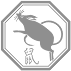
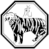
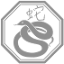
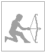
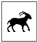
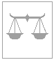
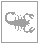

Current zodiac-sign is (old style) or (new style).
Birth date:
This is the 14th day of the year, and there are 351 days left in this year.
  
On the Chinese calendar, this is a year of the Tiger (虎, or Hǔ). The heavenly element is Yang Water. The earthly branch is 寅 (Yín).
 
Show new(fangled) zodiac
 
Show Klingon zodiac
Aquarius (21 January — 18 February):You are contemplative and analytical by nature. You will receive an unexpected gift from an acquaintance. Someone has complimented you today in your absence.Don't let yourself be lazy with a loved one. Your attractive personality will stand you in good stead. Your tendency to be rash might be a disadvantage where long term financial matters are concerned. You should be patient and mysterious where affairs of the heart are concerned. You are about to scale new heights at Horoscope.
Pisces (19 February — 20 March):You will travel to many exotic places. A routine task will turn into an enchanting adventure. You are careful and systematic.Your family will appreciate your attractive personality. The focus currently is on relaxing and avoiding tension. Don't let yourself be pushed into a corner at work. You are going to be surprised at work. Now is the time to begin to keep a clear head.
Aries (21 March — 19 April):You take criticism as an opportunity to grow. You are a traveler at heart. There will be many journeys. The project you have in mind will soon gain momentum.You can look forward to good news at work. Long term plans connected with the letter M are lucky. Be sure to wear something red today. Just be true to yourself: remember you are capable and upstanding. Socially you will be in demand, thanks to your willingness to make contributions.
Taurus (20 April — 20 May):The rainbow's treasures will soon belong to you. You have given some thought to a different life style. You will step on the soil of many countries.You may be feeling unwisely impetuous at work these days. It may be necessary to stand your ground with someone with green eyes today. Someone who wants to sell you something is a real bore and should be avoided. You should really keep on your toes these days. Socially you will be in demand, thanks to the fact that you are so pleasant.
Gemini (21 May — 20 June):You have strong spiritual powers, you should choose to develop them. He who is aware of his folly is wise. Good things are coming to you in due course of time.Family matters will be improved because of your reliability. Innate common sense will tell you when to make promises. Socially you will be in demand, thanks to your powers of observation. A stranger is going to be attracted by your strong sense of values. The stars are protecting you when dealing with affairs of the heart.
Cancer (21 June — 22 July):Your cares will lessen if they are faced cheerfully. Confucius say: he who has hope, has everything. Many receive advice; few profit by it.Now is the time to begin relaxing a little. Don't be afraid to show you can be persuasive. You are about to scale new heights - so don't be rash. Stick to what is straightforward and don't dabble in anything out of the ordinary. Your pleasant manners wil stand you in good stead.
Leo (23 July — 22 August):Others see you as a wise person. Your kindness will lead you to success. You will have a visitor soon -- keep the door locked.It may be necessary to stand your ground with a colleague today. You might well be in for some trying times in your love-life. Romance is well starred - but beware of being unreasonable. Try to be kinder to someone you think is a real bore. You are likely to be able to patch up any difficulties.
Virgo (23 August — 22 September):You will soon be crossing the great waters. You shall soon gain the attention of those who count. You will be showered with good luck.You should really concentrate on affairs of the heart. You should really try losing some weight. Stick to what is reliable or you may regret it later. You are about to scale new heights with more money at your disposal. You will enjoy yourself now, thanks to a colleague's inventive manner.
Libra (22 September — 22 October):It is better to have a hen tomorrow than an egg today. You are altruistic and will be involved in many humanitarian projects. Get off to a new start - come out of your shell.Be prepared to make some concessions. Unfortunately you haven't been resolute enhough lately. Long term plans connected with the letter L are lucky. Try not to squander your energy and try to be more organised. Don't let your tribulations get the better of you.
Scorpio (23 October — 21 November):You are a bundle of energy, always on the go. Good news will be brought to you by mail. If you continually give, you will continually have.Don't get carried away with a close friend. Stick to what is decent or you may be sorry later. You may surprise someone by showing you can be very calm. Be impeccably decent in your dealings. Your gentle attitude will be an asset at Horoscope.
Sagittarius (22 November — 21 December):Appearances are often deceiving. Take that chance you've been considering. A person's character is his destiny.Your affairs of the heart are connected with good luck at the present, so make the most of it! It may be necessary to stand your ground with someone whose name starts with N today. You should really try taking it easier. Don't let yourself be drawn into an argument with a superior at work. Don't take a journey east today without careful planning.
Capricorn (22 December — 20 January):Happiness will bring you good luck. Your personality is fueled by the fascination you feel for life. Ideas you believe are absurd ultimately lead to success!Try realising your true potential. If you are close to someone whose name begins with G, there may be a small sum of money on the way. Allow some time for something tried and tested. This evening you could feel yourself rather hard done by. Someone from you past who is upstanding and honest is looming on the horizon again.
Capricorn (20 January — 15 February):The secret to good friends is no secret to you. You will be wise not to seek too much from others. Your goal is just around the corner.Your rigid outlook might be a disadvantage in your love-life. Have faith in yourself and cast your conflicts aside. Allow some time for looking after your body more. Be wary of your cynicism, especially over a long awaited answer. Romance is connected with good luck - but beware of your tendency to be hasty.
Aquarius (16 February — 10 March):Be careful not to overspend. A diversity of friends is a credit to your flexible nature. Personal achievement will be your key to happiness.Someone wants to sell you something which could improve your health. Before you can make any firm decisions you must try taking it easier. A problem at work will shortly be eased thanks to your kind attitude. Someone who wants to sell you something will force your hand unless you are strong. Avoid being shortsighted where money is concerned and getting led into anything connected with politics.
Pisces (11 March — 17 April):Although you photograph well, a photo doesn't capture your charm. Good things are being said about you among your friends. It is better to get something done late than never.You may soon find yourself going north. The stars are protecting you at Horoscope. It may be necessary to stand your ground with someone whose name starts with E today. Try not to worry about your domestic scene: relax and look forward to getting a surprise in the post. Don't let yourself be rash at work.
Aries (18 April — 12 May):You discover treasures where others see nothing unusual. You have natural grace and great consideration for others. You will discover the truth in time.This should be an exciting and hectic time for you, especially where children are concerned. A problem at work will shortly be eased thanks to your determination. Don't be afraid to show you can be both firm and self-controlled. This should be an exciting and hectic time for you when you should try to be more restrained. Romance is well starred - but beware of someone who refuses to make any contributions.
Taurus (13 May — 20 June):He who takes notes listens well. Every excess becomes a vice. Be moderate where pleasure is concerned, avoid fatigue.Your determination will pay off later on and you will be able to relax with some pleasant people. Family matters will be improved because of your flexible attitude. Try to avoid extravagance. You may find yourself in a tight spot today, if you don't stick to what you know is reliable. A stranger is going to be attracted by your loyal attitude.
Gemini (21 June — 19 July):You are going to have a very comfortable old age. You are capable, competent, creative and careful. You will make many changes before settling down happily.Your chances of making headway may be thwarted by your pride. You may surprise someone by showing you can be very good at making compromises when needed. Try not to squander your efforts where financial matters are concerned. Try to be more adventurous. This is a time when you should be getting some new clothes.
Cancer (20 July — 9 August):You are a happy man. Your talents will capture you the highest status and prestige. Luck will visit you the next full moon.There are plenty of rewards in store at work, thanks to your flexible attitude. Family matters may be improved because of a long awaited answer. Your chances of making headway may be thwarted by your introspective nature. Socially you will be in demand, thanks to your diligence. You will enjoy yourself realising your true potential today.
Leo (10 August — 15 September):Star light, star bright, your wish will come true tonight. You are admired for your adventurous ways. Rely on long time friends to give you advice.You are entering a new phase with less anxieties. Your family will appreciate your pleasant personality. This should be an exciting and hectic time for you when you should try to patch up any difficulties. You should succeed by being able to count on your sensitive nature. Have faith in yourself and your financial matters these days.
Virgo (16 September — 29 October):Many receive advice, only the wise profit by it. Place special emphasis on old friendship. Honesty and integrity are just some of your best attributes.If you are close to someone whose name begins with W, there may be a surprise in the post on the way. Someone wants to sell you something which could improve your social life. You should really try socialising more. You should now be able to make a great deal of headway at Horoscope. Someone from your past is being strong about keeping an old promise.
Libra (30 October — 22 November):Nothing can keep you from reaching your goals. People admire you for being such a charmer. There is excitement to be found everywhere you go.Be as demonstrative as you can this evening. Think about being more imaginative - you won't regret it. Your resolute sense of values will stand you in good stead. Innate common sense will tell you how to go about resolving a problem. Now is the time to begin to count your pennies.
Scorpio (23 November — 28 November):You are enterprising - take advantage of it. You are realistic and people can relate to you. Be a little more cautious this month.Watch out for something green which is looking promising. Don't let yourself be rash with a superior at work. Think about a colleague who is longing to get a bit friendlier. It will pay you off to count your pennies. You may soon need to take a relative into your confidence.
Ophiuchus (29 November — 16 December):An imaginary illness is worse than a real one. You'll accomplish more later if you have a little fun this weekend. Your talents will be recognized and suitably rewarded.You may find yourself in a tight spot today, when you'll need to be pretty strong. Someone from your past wants you to get into something where you would be out of control - don't do it! Don't let yourself be dissatisfied in your love-life. Past memories should help you to patch up any difficulties. Co-operation and success at work depend on your sensitive nature.
Sagittarius (17 December — 19 January):You find beauty in ordinary things. Do not lose this ability. Don't look back, always look ahead. You have an unusual magnetic personality.The focus currently is on writing some poetry. Someone from your past is turning into a real bore. A stranger is going to be attracted by your cheerful nature. Be willing to spend more money. Long term plans are looking good, as long as you're not dissatisfied.
Invasion (Xan'lahr) (21 January — 29 February):Today is a good day to die.
Battle (A'Kahless) (1 March — 7 April):Today is a good day to die.
Siege (Jo'vos) (8 April — 19 May):Today is a good day to die.
Alliance (Maktag) (20 May — 1 July):Today is a good day to die.
Retreat (Merruthj) (2 July — 10 August):Today is a good day to die.
Glory (Soo'jen) (11 August — 19 September):Today is a good day to die.
Duty (Lo'Bral) (20 September — 2 November):Today is a good day to die.
Betrayal (nay'Poq) (3 November — 13 December):Today is a good day to die.
Challenge (Doqath) (14 December — 20 January):Today is a good day to die.